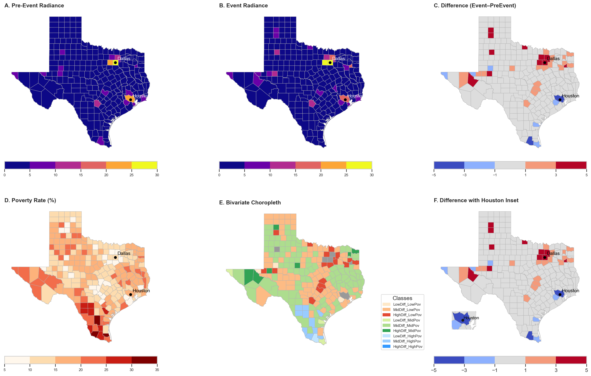
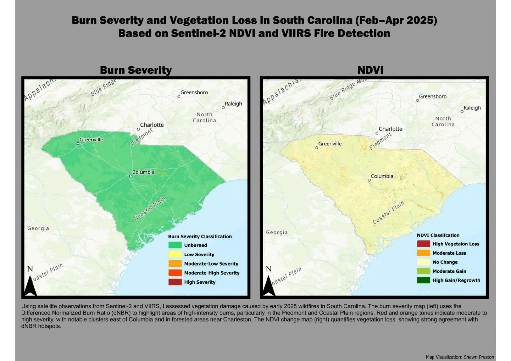
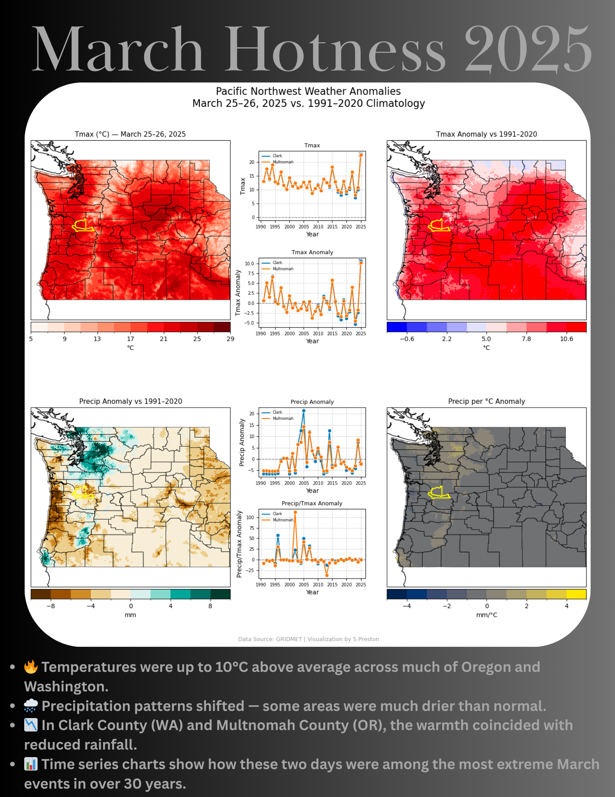

🛰️ VIIRS UHI Intensity
Urban Heat Island analysis using nighttime lights (PDF report).
GitHub ↗

❄️ Texas Winter Storm
Storm radiance impacts correlated with poverty.
GitHub ↗

🔥 SC Wildfires 2025
Burn severity mapping with Sentinel-2 & VIIRS.
GEE Script ↗

🌡️ PNW Heatwave 2025
GridMET anomaly analysis of extreme heat.
GitHub ↗

🌎 Earth Day 2025 Anomalies
Global and anomaly visualizations of April 22, 2025.
GitHub ↗

🍎 Apple Climate Metrics
Historical impacts on apple production.
GitHub ↗

🌤️ CESM2 Apple Metrics
Temperature shifts affecting apple-growing regions using CESM2-LE.
GitHub ↗

🌊 Kerr County Flood 2025
Flood extent and statistics from Kerr County, TX.
GitHub ↗

🎮 Greenhouse Invaders
Educational game on greenhouse gases.
GitHub ↗